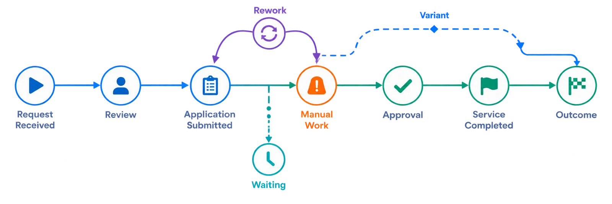

The PE Clock
100-day plans, integration decisions and value-creation initiatives require short discovery-to-action cycles.
100-day plans, integration decisions and value-creation initiatives require short discovery-to-action cycles.
The more data preparation, modeling, consulting and implementation required, the harder it becomes to justify each new operational question.
Every company brings a different mix of systems, data maturity, custom applications and operating practices.
Specialized tools often bring specialized skills—creating another capability each portfolio company must build, buy or maintain.
Point-in-time analysis ages quickly as processes, systems, automation, acquisitions and operating conditions change.
First execution view in about 10 business days.
Read-only source access. No process remodeling or production application changes.
Different systems, workflows, cloud, SaaS, files and legacy environments.
No proprietary process-query language or extensive modeling effort.
Move from historical analysis to differential or more frequent execution updates.

of cases involve manual intervention.
of cases return for rework or correction.
average waiting time across the observed flow.
documented execution variants in this workflow.